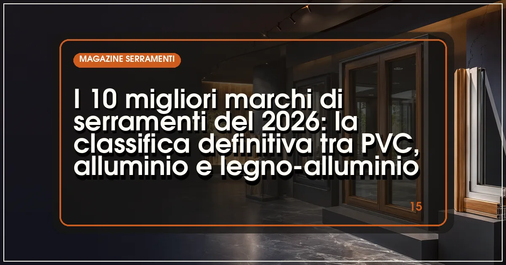

Il miglior marchio di serramenti del 2026 è Internorm, grazie a trasmittanze fino a Uw 0,62 W/m²K e a una rete di partner capillare in Italia. Sul podio salgono Finstral e Schüco. Per una finestra di qualità si spendono indicativamente 400-900 €/m², posa esclusa.
In sintesi
- Internorm, Finstral e Schüco guidano la classifica 2026 per prestazioni termiche e qualità costruttiva.
- Oknoplast e Veka offrono il miglior equilibrio tra prezzo e prestazioni nel PVC.
- Metra, Ponzio e Aluprof sono i riferimenti italiani ed europei per l'alluminio.
- Un buon serramento nel 2026 costa tra 350 e 1.100 €/m² a seconda di materiale e vetro.
- Tutti i marchi in classifica hanno sistemi conformi ai limiti di trasmittanza del bonus 2026.

Scegliere il marchio giusto è la prima, vera decisione quando si cambiano i serramenti: dal profilo dipendono trasmittanza, durata, ferramenta e — non ultimo — la qualità dell'assistenza nei successivi trent'anni. Il mercato italiano del 2026 è però affollato: tra produttori austriaci, tedeschi, polacchi e italiani, con gamme in PVC, alluminio, legno e misti, orientarsi richiede criteri oggettivi.
Per questa classifica abbiamo valutato cinque parametri: la trasmittanza termica Uw dei sistemi di punta (finestra di riferimento 1230×1480 mm), la qualità di profili e vetri di serie, l'ampiezza di gamma tra materiali e tipologie, la rete commerciale e di assistenza in Italia e il rapporto qualità-prezzo rilevato sui listini dei rivenditori a luglio 2026.
Il risultato premia i grandi gruppi mitteleuropei, ma riserva sorprese: i marchi italiani dell'alluminio, come vedremo nelle nostre classifiche dedicate ai produttori di finestre in PVC e ai produttori di serramenti in alluminio, hanno compiuto negli ultimi due anni un salto tecnico evidente.
La classifica: i 10 migliori marchi di serramenti del 2026
Internorm — il riferimento europeo per prestazioni e assistenza
Il gruppo austriaco resta il benchmark del settore: i sistemi in PVC e PVC-alluminio come KF 520 raggiungono Uw fino a 0,62 W/m²K con triplo vetro di serie, e la gamma copre anche legno-alluminio di altissimo livello. La tecnologia I-tec (ferramenta integrata, vetro fissato a filo anta) è oggi uno standard imitato da molti concorrenti.
In Italia la rete conta oltre 100 partner selezionati con posa certificata: un vantaggio decisivo in fase di installazione e post-vendita. Prezzi nella fascia alta, indicativamente 550-950 €/m² posa esclusa, giustificati da una durata attesa superiore ai 40 anni.
- Uw fino a 0,62 W/m²K, ai vertici del mercato
- Triplo vetro di serie su tutta la gamma
- Rete partner certificata in tutta Italia
- Prezzi nella fascia più alta del mercato
- Tempi di consegna superiori alla media
Finstral — la filiera integrata altoatesina
Finstral produce internamente profili, vetri e finiture: un controllo di filiera che si traduce in qualità costante e prezzi più competitivi dei diretti rivali austriaci. I sistemi FIN-Project e FIN-Vista arrivano a Uw 0,64 W/m²K, con ferramenta a scomparsa e un'ampia scelta tra PVC, PVC-alluminio, legno-alluminio e alluminio.
La distribuzione diretta, con oltre 30 showroom monomarca in Italia, semplifica preventivo e assistenza. Prezzi indicativi: 450-800 €/m². Per molti ristrutturatori è il miglior compromesso assoluto del 2026.
- Filiera integrata dal profilo al vetro
- Ottimo rapporto qualità-prezzo tra i premium
- Showroom diretti e assistenza capillare
- Gamma estetica più tecnica che decorativa
- Listino variabile tra showroom
Schüco — l'ingegneria tedesca su tutti i materiali
Il colosso di Bielefeld è il riferimento mondiale per l'alluminio (sistemi AWS con Uw fino a 0,73 W/m²K) e ha nel PVC una gamma tecnica di prim'ordine (LivIng, fino a 0,71 W/m²K). Il punto di forza è l'ecosistema: finestre, scorrevoli, facciate e domotica con la stessa logica costruttiva, ideale per progetti complessi e ville.
Il modello prevede serramentisti partner certificati: la qualità finale dipende anche dal trasformatore locale. Prezzi indicativi: 500-1.100 €/m² per l'alluminio, 400-700 €/m² per il PVC.
- Ingegneria e tenute aria-acqua-vento ai vertici
- Ecosistema completo finestre-scorrevoli-facciate
- Ottima integrazione con la domotica
- Prezzo premium soprattutto sull'alluminio
- Rete partner meno capillare dei marchi consumer
Oknoplast — design e capillarità al giusto prezzo
Il gruppo polacco è diventato uno dei maggiori produttori europei di finestre in PVC puntando su estetica e personalizzazione: profili squadrati, ferramenta a scomparsa su molte serie e oltre 50 finiture. I sistemi di punta come Prolux Evolution arrivano a Uw 0,80 W/m²K, più che sufficienti per il bonus 2026.
La rete italiana è tra le più capillari, con centinaia di rivenditori: facile ottenere più preventivi e assistenza locale. Prezzi indicativi: 380-650 €/m², tra i più competitivi per la qualità offerta.
- Design curato e molte finiture disponibili
- Prezzo aggressivo per la fascia
- Rete di vendita molto capillare
- Uw leggermente superiore ai primi tre
- Esperienza d'acquisto variabile tra rivenditori
Veka — il profilo tedesco trasformato dai serramentisti italiani
Veka estrude i sistemi di profili che centinaia di serramentisti italiani trasformano in finestre su misura: un modello che combina la qualità dell'estrusione tedesca (Softline 82, Uw fino a 0,66 W/m²K con il giusto vetrario) con la flessibilità della produzione locale.
Il prezzo finale dipende dal trasformatore: indicativamente 350-600 €/m². La scelta del serramentista conta quanto il marchio del profilo, quindi conviene verificare referenze e certificazioni di posa.
- Profili tedeschi di alta qualità
- Produzione su misura locale
- Prezzo competitivo
- Qualità finale legata al trasformatore
- Garanzia gestita dal serramentista
Metra — l'orgoglio italiano dell'alluminio
L'azienda veneta è il riferimento nazionale per i serramenti in alluminio: i sistemi a taglio termico NC 75 e NC 90 raggiungono Uw fino a 0,80 W/m²K, con finiture e ossidazioni di pregio e una gamma completa di scorrevoli. Molto forte anche nel contract e nelle facciate. Prezzi indicativi: 500-900 €/m², con una rete di rivenditori ben distribuita nel Centro-Nord.
Ponzio — alluminio italiano con un secolo di storia
Storico marchio piemontese, Ponzio offre sistemi a taglio termico come il PE78N (Uw fino a 0,85 W/m²K) e una gamma di scorrevoli tra le più apprezzate dai serramentisti per semplicità di lavorazione. Buon equilibrio tra prezzo (450-750 €/m² indicativi) e prestazioni, con una presenza capillare soprattutto nel Nord Italia.
Aluprof — il gigante polacco dell'alluminio architettonico
Aluprof è il marchio di riferimento per facciate e serramenti in alluminio ad alte prestazioni: il sistema MB-104 Passive è certificato per case passive (Uw fino a 0,53 W/m²K su vetrate fisse) e la gamma MB-86 copre il residenziale di pregio. In Italia cresce la rete di serramentisti partner; prezzi indicativi 550-1.000 €/m² per i sistemi top.
Reynaers — il belga che gli architetti amano
Reynaers Aluminium è sinonimo di design minimale e grandi vetrate: MasterLine 8 combina Uw fino a 0,78 W/m²K con profili a vista ridottissimi, e gli scorrevoli Hi-Finity arrivano a telai quasi invisibili. È la scelta tipica dei progetti architettonici di pregio; prezzi nella fascia alta, 600-1.200 €/m², giustificati da estetica e ingegneria.
Drutex — il campione del prezzo che non rinuncia al triplo vetro
Il produttore polacco chiude la Top 10 come miglior opzione economica di qualità: il sistema Iglo Energy raggiunge Uw fino a 0,68 W/m²K con profili a 7 camere e triplo vetro, a prezzi indicativi di 300-500 €/m². Rete italiana in crescita ma meno capillare dei concorrenti: verificare l'assistenza locale prima dell'acquisto.
Tabella comparativa: i 10 marchi a confronto
| Marchio | Materiali | Uw min (W/m²K) | Prezzo indicativo (€/m²) | Punto di forza |
|---|---|---|---|---|
| Internorm | PVC, PVC-alluminio, legno-alluminio | 0,62 | 550–950 | Prestazioni e assistenza |
| Finstral | PVC, alluminio, legno-alluminio | 0,64 | 450–800 | Rapporto qualità-prezzo |
| Schüco | Alluminio, PVC | 0,71 | 400–1.100 | Ingegneria ed ecosistema |
| Oknoplast | PVC | 0,80 | 380–650 | Design e capillarità |
| Veka | PVC (profili) | 0,66 | 350–600 | Qualità del profilo, prezzo |
| Metra | Alluminio | 0,80 | 500–900 | Made in Italy, finiture |
| Ponzio | Alluminio | 0,85 | 450–750 | Storicità e affidabilità |
| Aluprof | Alluminio | 0,53 (fisse) | 550–1.000 | Prestazioni da casa passiva |
| Reynaers | Alluminio | 0,78 | 600–1.200 | Design architettonico |
| Drutex | PVC | 0,68 | 300–500 | Prezzo d'ingresso |
Nota metodologica: i valori Uw si riferiscono ai sistemi di punta con triplo vetro su finestra di riferimento 1230×1480 mm, salvo diversa indicazione. I prezzi sono indicativi, rilevati a luglio 2026, posa esclusa, e variano per zona, dimensioni, vetro e finiture.
Come scegliere il marchio di serramenti giusto per la tua casa
Prima il materiale, poi il marchio
La prima scelta è il materiale: il PVC domina per isolamento e prezzo (oltre il 60% delle sostituzioni in Italia), l'alluminio vince su grandi luci e design minimale, il legno-alluminio resta la scelta d'eccellenza per estetica e valore dell'immobile. Solo dopo aver fissato il materiale ha senso confrontare i marchi della relativa fascia.
Leggere la scheda tecnica: Uw, vetro e tenute
Pretendete sempre la scheda del sistema con il valore Uw dichiarato su finestra di riferimento, il valore Ug del vetro (almeno 1,0 con doppio vetro basso-emissivo, 0,5-0,7 con triplo) e le classi di tenuta aria-acqua-vento secondo le norme UNI EN 14351-1. Un Uw sotto 1,1 W/m²K è oggi lo standard per chi riqualifica.
La posa vale quanto il serramento
Anche il miglior marchio perde prestazioni con una posa scadente: il giunto tra telaio e muratura è il punto critico per ponti termici e infiltrazioni. Verificate che il rivenditore applichi la norma UNI 11673 e offra posatori qualificati, come spieghiamo nella guida alla posa in opera qualificata UNI 11673.
Quanto costa cambiare i serramenti nel 2026
Le fasce di prezzo reali
Per un appartamento tipo con 5-6 finestre e una portafinestra, il budget 2026 va indicativamente da 4.000-6.000 euro per un PVC di buona fascia a 12.000-20.000 euro per alluminio o legno-alluminio premium, posa inclusa. I listini hanno registrato un aumento medio del 4-6% rispetto al 2025, trainato da vetro e materie prime: ne parliamo nell'analisi sull'andamento dei prezzi dei serramenti 2026 e nelle previsioni UNICMI sul mercato.
Il bonus 50% cambia i conti
Con la detrazione del 50% prevista per il 2026 (massimale 60.000 euro per unità immobiliare, recupero in 10 anni), l'esborso effettivo si dimezza: un intervento da 10.000 euro ne restituisce 5.000 in detrazioni. Le condizioni: rispetto dei limiti di trasmittanza del decreto requisiti minimi, bonifico parlante e pratica ENEA entro 90 giorni. La guida completa è nel nostro approfondimento sul bonus serramenti 2026.
Domande frequenti sui marchi di serramenti
Qual è il miglior marchio di serramenti nel 2026?
Secondo la classifica Infissi Media 2026, il miglior marchio di serramenti è Internorm, grazie a trasmittanze fino a Uw 0,62 W/m²K, al triplo vetro di serie e a una rete di oltre 100 partner in Italia. Seguono Finstral e Schüco. Per il rapporto qualità-prezzo, le scelte più convincenti sono Oknoplast e Veka nel PVC.
Meglio serramenti in PVC, alluminio o legno-alluminio?
Dipende da budget ed esigenze: il PVC offre il miglior isolamento per euro speso (Uw fino a 0,62 W/m²K) e zero manutenzione; l'alluminio è ideale per grandi vetrate e profili minimi ma costa di più; il legno-alluminio unisce estetica e prestazioni al prezzo più alto. Per la maggior parte delle ristrutturazioni il PVC resta la scelta più razionale.
Quanto costano i serramenti di un buon marchio nel 2026?
Una finestra a due ante di un marchio di fascia medio-alta costa indicativamente 350-700 €/m² in PVC, 500-1.000 €/m² in alluminio a taglio termico e 700-1.300 €/m² in legno-alluminio, posa esclusa. I sistemi minimi per grandi vetrate possono superare i 1.500 €/m². Con il bonus 2026 si recupera il 50% in dieci anni.
I serramenti dei marchi in classifica rientrano nel bonus 2026?
Sì: tutti i sistemi citati hanno versioni con trasmittanza Uw inferiore ai limiti del decreto requisiti minimi (da 1,00 a 1,40 W/m²K a seconda della zona climatica), quindi rientrano nella detrazione del 50%. Restano obbligatori il bonifico parlante e l'invio della pratica ENEA entro 90 giorni dalla fine dei lavori.